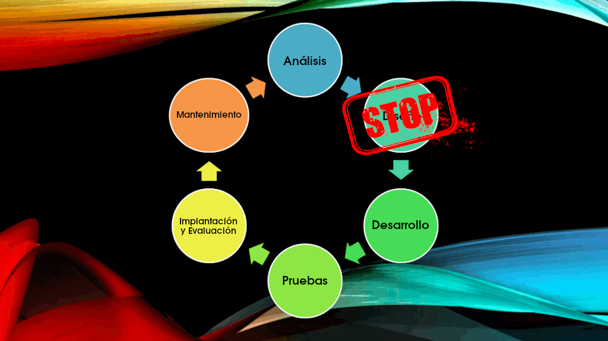

Checkpoint 13
Nota:
pulsa en la pregunta para ver la respuesta
o sobre una imagen para ampliarla (o devolverla a su tamaño original).

Preguntas
-
¿Cuáles son las partes de un diagrama de clases?
El diagrama UML de clases está formado por dos elementos: las clases y sus relaciones.

Clases
Las clases son el elemento principal del diagrama y normalmente se utilizan para representar conceptos o entidades del «negocio». Una clase define un grupo de objetos que comparten características, condiciones y significado. La manera más rápida para encontrar clases sobre un enunciado, sobre una idea de negocio o, en general, sobre un tema concreto es buscar los sustantivos que aparecen en el mismo. Si no se identifican adecuadamente se generarán problemas que acabarán en un nuevo análisis.
Una clase está compuesta por tres elementos representados en un rectángulo dividido en zonas por líneas horizontales:
- En la parte superior del bloque encontramos el nombre de cada clase, o elemento que se desea clasificar centrado y en negrita.
- En la parte central, en forma de lista o items, se ubican los atributos de dicha clase. Y, aunque el formato oficial es:
visibilidad nombre_atributo : tipo = valor-inicial { propiedades }
se suele simplificar usando únicamente el nombre y a veces el tipo. - En la parte inferior del bloque, también en forma de lista, se colocan las operaciones o métodos a implementar. De forma parecida a los atributos, sigue el formato:
visibilidad nombre_funcion { parametros } : tipo-devuelto { propiedades }
y, de igual forma, se suele simplificar indicando únicamente el nombre de la función y, en ocasiones, el tipo devuelto.

Tanto los atributos como las funciones incluyen al principio de su descripción la visibilidad que tendrán:
-
(+) Pública. Representa que se puede acceder al atributo o función desde cualquier clase.
-
(-) Privada. Indica que se puede acceder al atributo o función únicamente desde la misma clase.
-
(#) Protegida. Expresa que el atributo o función puede ser accedido únicamente desde la misma clase o desde las clases que hereden de ella (clases derivadas).
En la práctica solo se suelen usar estos tres. No obstante, aunque no es muy común, se pueden usar otros símbolos como (/) Derivado, (_) Estático y (~) Paquete.
Relaciones
Una relación identifica una dependencia. Esta dependencia puede ser entre dos o más clases (la más común) o de una clase hacía sí misma (raro, pero existen), este último tipo se denomina dependencia reflexiva. Las relaciones se representan con una linea que une las clases y variará dependiendo del tipo de relación. Como ejemplo cercano de relación reflexiva tendríamos la de parentesco, en la que la clase Persona tendría una relación con otra instancia de la misma clase Persona para indicar cómo una persona puede ser el progenitor o el descendiente de otra persona.

Relación reflexiva Las relaciones en el diagrama de clases tienen varias propiedades que, dependiendo del nivel de detalle que se quiera dar al diagrama, se representarán o no. Estas propiedades son las siguientes:
- Multiplicidad. Es decir, el número de elementos de una clase que participan en una relación. Se puede indicar un número, un rango… Se utiliza n o * para identificar un número cualquiera.
- Nombre de la asociación. En ocasiones se escribe una indicación de la asociación que ayuda a entender la relación que tienen dos clases. Suelen utilizarse verbos como por ejemplo: «Una empresa contrata a n empleados»

Ejemplo de relación Empresa-Empleado Los tipos de relación son los siguienteses:
-
Asociación. Es el más común y se utiliza para representar dependencia semántica, es decir, una clase es consciente de la otra. Puede ser unidireccional o bidireccional y se representa con una simple linea continua que une las clases que están incluidas en la asociación.

Ejemplo de asociación En el caso de la relación de asociación entre las clases Persona y Mascota, podríamos tener una asociación donde una persona podría tener una o más mascotas. Esta asociación sería unidireccional, ya que la persona es consciente de sus mascotas, pero las mascotas pueden no ser conscientes de la persona propietaria. La multiplicidad en esta relación podría indicar que una persona puede no tener ninguna, o tener una o más mascotas.
Esta asociación se representaría con una línea continua conectando las clases Persona y Mascota, con una flecha apuntando hacia la clase Mascota para indicar la dirección de la asociación.
-
Agregación. Representa relaciones en las que una clase es parte de otra contenedora, pero aun así debe tener existencia en sí misma y puede estar asociada con otras clases. Se representa con una línea que tiene un rombo hueco/vacío en la parte de la clase contenedora.

Ejemplo de agregación En este caso una mesa tiene tablas de madera como parte de su estructura, pero las tablas de madera pueden existir por sí solas y estar asociadas con otros objetos, además de una mesa.
En otro ejemplo, un Comité puede tener varios miembros, pero el destruir el Comité no debe causar la destrucción de los miembros, ya que pueden ser miembros de otros Comités.
-
Composición. Es similar a la agregación, representa una relación jerárquica entre un clase y las partes que la componen pero, en este caso, la existencia de las clases de la que forman parte no tiene sentido cuando la primera clase no existe. Es decir, cuando la clase que contiene las otras desaparece, deben desaparecer todas las clases ya que no tienen sentido por sí mismas sino que dependen de la clase que conforman. Además de tener el mismo tiempo de vida, los componentes no se comparten entre varias clases, a diferencia de lo que ocurre con la agregación. Se representa con una linea continua con un rombo relleno en la clase que está “compuesta” por otra clase. Esto significa que la clase que contiene la composición es responsable de la creación y destrucción de la clase que está siendo compuesta.

Ejemplo de composición Aquí vemos como la clase vuelo está compuesta por la clase pasajero y, por tanto, si se destruye la clase vuelo también será destruida la clase pasajero que estaba asociada a él.
En otro ejemplo, un cliente puede tener un nombre y una dirección. Un cliente sin nombre o dirección no tiene valor. Por la misma razón, cuando se destruye al cliente, no tiene sentido mantener el nombre y la dirección.
-
Dependencia. Se utiliza este tipo de relación para representar que una clase requiere de otra para su funcionamiento, pero no está directamente relacionada con ella. Es muy sencilla y se representa con una flecha discontinua que va desde la clase que depende hasta la clase de la que depende.

Ejemplo de dependencia Supongamos que tenemos una clase Coche que tiene un método motorArranque que toma un objeto de la clase Motor como parámetro para arrancar el motor. En este caso, la clase Coche depende de la clase Motor para poder arrancar su motor.
-
Herencia. Es muy común ya que permite que una clase (clase hija o subclase) reciba (herede) los atributos y métodos de otra clase (clase padre o superclase). Estos atributos y métodos recibidos se suman a los que la clase tiene por sí misma. Se representa mediante una línea continua con una flecha vacía que apunta desde la clase hija hacia la clase padre.

Ejemplo de herencia Aquí vemos como todos los animales heredan el método respirar() de la clase Animal.
En el ejemplo siguiente podemos ver, en la práctica, lo anterior.

En el diagrama se observa una línea horizontal que representa la asociación que hay entre la Agencia y el Cliente para realizar el intercambio económico.
Sin embargo, para que la transacción sea posible es indispensable la Atención al cliente por ello se representa con una flecha discontinua.
Las siguientes flechas son las que salen del Cliente a la Reservación y de ésta al Pago, en estos casos las flechas en un extremo poseen una forma de rombo de color negro que representan composición. Es decir, que la Reservación se compone del Cliente y que a su vez el Pago se compone de la Reservación, ya que, de no existir el Cliente la Reservación y el Pago no serían posibles.
En cuanto a la multiplicidad, en este caso la agencia puede relacionarse con uno o muchos clientes (1…*), los clientes pueden hacer la reserva de un solo auto (1) a la vez y al cliente se le permite hacer un único pago o fraccionarlo en varias partes (1…*).
¿Por dónde seguir?
Para documentarte más puedes recurrir a la fuente, leer el tutorial o ver el video introductorio.
-
¿Los diagramas de implementación son estructurales o conductuales?
Dentro de los diagramas estructurales se encuentran los diagramas de implementación (o componentes) que muestran la forma física del sistema, es decir, permiten visualizar la arquitectura física del hardware, el software y todos los dispositivos del sistema.
Este tipo de diagramas representa un elemento muy importante en la documentación de sistemas pues ayudan con la planificación de proyectos complejos y facilitan la comprensión de la arquitectura del proyecto. Cuando los componentes de hardware se muestran en relación con los demás, es más fácil hacer un seguimiento de toda la infraestructura de hardware y asegurarse de que todos los elementos se tienen en cuenta en una implementación.
Se pueden dividir, básicamente, en:
-
Diagrama de paquetes. Se utilizan para mostrar las dependencias entre los diferentes paquetes de un sistema. Un paquete, representado como una carpeta de archivos, organiza los elementos del modelo, como los casos de uso o las clases, en grupos.

-
Diagramas de componentes. Representan las dependencias entre varios componentes físicos del sistema. Muestran la organización (contención de unos dentro de otros) y las dependencias entre componentes de software.

Normalmente se consideran componentes de software de tres niveles:
- Código fuente. Muestra las dependencias de compilación entre ficheros.
-
Librerías. Muestra el mapeo de las clases a librerías en tiempo de ejecución.
La siguiente figura ilustra que la libreria Trade (Trade.dll) depende de la clase Slate (Slate.cls) y la clase Trade (Trade.cls).

-
Ejecutables. Muestra las interfaces y las dependencias de las llamadas entre programas ejecutables.

Esta figura muestra que el ejecutable Trade se comunica con el ejecutable Contracts a través de la interface TradeContract. También se comunica con la libreria Trade por medio de la interface Trade.
-
Diagramas de despliegue. Visualizan la configuración del sistema en tiempo de ejecución a partir de ilustrar como los procesos se distribuyen en procesadores, ordenadores u otros dispositivos.

¡¿No te ha quedado claro?! En este tutorial, en este artículo y en este video o en este otro video te lo pueden aclarar… o no.
-
-
¿Qué es un diagrama de actividad?
Dentro de los diagramas UML de comportamiento encontramos los diagramas de actividades, que representan el flujo de los procedimientos de un programa o sistema de cualquier área. Dicho de otra forma, los diagramas de actividad muestran las acciones que realizan los usuarios a la hora de usar algún servicio como, por ejemplo, el cajero automático.
Estos diagramas se integran con formas especializadas que luego se conectan con flechas e indican las operaciones que se deben ejecutar cronológicamente.
Símbolos
Estos son algunos de los símbolos que se emplean:
 Inicio: como su nombre indica, es el comienzo del proceso.
Inicio: como su nombre indica, es el comienzo del proceso. Actividad: son descripciones breves de las labores en el proceso de modelado.
Actividad: son descripciones breves de las labores en el proceso de modelado. Conector: es una flecha entrante que indica el inicio de una actividad, es decir, el flujo direccional. Tras finalizar el proceso comienza otro con la flecha saliente.
Conector: es una flecha entrante que indica el inicio de una actividad, es decir, el flujo direccional. Tras finalizar el proceso comienza otro con la flecha saliente. Barra de sincronización: se refiere a la combinación o bifurcación de actividades que solo pueden repetirse una vez. La línea gruesa también se puede trazar de forma vertical. En este ejemplo se observa como dos actividades se unen en una.
Barra de sincronización: se refiere a la combinación o bifurcación de actividades que solo pueden repetirse una vez. La línea gruesa también se puede trazar de forma vertical. En este ejemplo se observa como dos actividades se unen en una. Decisión: indica que se tiene que elegir una opción y se añade una descripción con las opciones a considerar.
Decisión: indica que se tiene que elegir una opción y se añade una descripción con las opciones a considerar. Nota: sirve para aclarar detalles o indicar especificaciones.
Nota: sirve para aclarar detalles o indicar especificaciones. Símbolo de enviar señal: se refiere a que se está remitiendo una señal a una actividad receptora.
Símbolo de enviar señal: se refiere a que se está remitiendo una señal a una actividad receptora. Historia superficial: transición del último estado activo.
Historia superficial: transición del último estado activo. Símbolo de final de flujo: indica que concluyó el flujo de un proceso específico.
Símbolo de final de flujo: indica que concluyó el flujo de un proceso específico. Condición: señala que el flujo de actividad debe dividirse en otra dirección, resaltando su condición.
Condición: señala que el flujo de actividad debe dividirse en otra dirección, resaltando su condición. Finalización: señala el cese de actividades.
Finalización: señala el cese de actividades.
¿Para qué se utiliza?
El diagrama de actividades es una herramienta útil a la hora de compartir información. Es ideal para ilustrar las operaciones que se realizan en un sistema, describiendo las diferentes fases por las que se pasa.
Aunque se emplea con frecuencia en el campo de la informática (a fin de explicar la lógica de un algoritmo o una función, el método y la operación de la arquitectura de un software), el esquema se aplica igualmente en procesos industriales y de negocio.

Puedes ampliar conocimientos leyendo este artículo o viendo este video.
-
¿De qué manera el diseño del sistema ayuda al proceso de desarrollo?
Ciclo de vida de un sistema de información
Para saber a qué nos enfrentamos al momento de desarrollar un sistema de información, es necesario tener una visión general de la arquitectura de un sistema, y, en nuestro caso, incidiendo en el trabajo que se lleva a cabo, inmediatamente antes, en la fase de diseño del sistema.

El proceso se inicia siempre con la petición de ayuda (de un sistema de información) por parte de una persona.
Continua con la determinación de los requisitos del sistema en la fase de analisis. El aspecto fundamental del análisis de sistemas es comprender todas las facetas importantes de la parte de la empresa que se encuentra bajo estudio. Los analistas, al trabajar con los empleados y administradores, deben estudiar los procesos de una empresa para dar respuesta a las siguientes preguntas:
- ¿Qué es lo que hace?
- ¿Cómo se hace?
- ¿Con qué frecuencia se presenta?
- ¿Cuál es el volumen de transacciones o decisiones?
- ¿Cuál es el grado de eficiencia con el que se efectúan las tareas?
- ¿Existe algún problema?
- ¿Cómo de serio es?
- ¿Cuál es la causa que lo origina?

Como puede verse, es un proceso de recopilación e interpretación de hechos, identificación de problemas y descomposición de un sistema en sus componentes, e incluye estudios de viabilidad, diagramas de flujo de datos y otras técnicas.
Con esa base de conocimiento se elabora el documento de Especificación de requisitos de software (SRS) donde se detalla qué debería hacer el sistema.

Diseño de sistemas
Fases que incluye:
-
Inclusión en el diseño de los componentes de hardware, aplicaciones, redes, bases de datos, interfaces de usuario, interfaces del sistema y la creación de los casos de prueba.
-
Transformación del documento de Especificación de requisitos de software (SRS) en una estructura lógica, que contiene un conjunto completo y detallado de especificaciones que se pueden implementar en un lenguaje de programación.

Tipos de especificaciones SRS. -
Creación de un plan de contingencia, capacitación, mantenimiento y operación.
-
Revisión del diseño propuesto, asegurándose que el diseño final cumple con los requisitos establecidos en el documento SRS y con unos estándares mínimos:
- Identificación de los límites e interfaces del sistema
- Una clara comprensión de los requisitos del sistema
- Diseño lógico y físico del sistema
- Elección de las tecnologías y arquitecturas adecuadas
- Escalabilidad y extensibilidad
- Seguridad y fiabilidad
- Facilidad de mantenimiento y evolución
-
Por último, elaboración de un documento de diseño que se utilizará en las siguientes fases.
Veamos cuáles son las principales tareas realizadas durante el proceso de diseño del sistema.
- Crear la definición del diseño
- Planificar e identificar las tecnologías que se utilizarán para construir e implementar los componentes del sistema y las interfaces físicas.
- Determinar qué tecnologías y componentes del sistema están en peligro de quedar obsoletos o evolucionar a lo largo de la etapa operativa del sistema. Hacer los preparativos para su eventual reemplazo.
- Documentar el enfoque de definición del diseño, incluidos los sistemas, bienes o servicios que se requieren para completar el diseño.
- Determinar los atributos del diseño
- Definir los criterios de diseño relacionados con las características arquitectónicas y asegurarse de que puedan implementarse.
- Definir las interfaces que no se establecieron durante la fase de arquitectura del sistema o que deben definirse a medida que los detalles del diseño se vuelven más precisos.
- Definir y registrar los atributos de diseño de cada elemento del sistema.
- Considerar las opciones para obtener componentes
- Examinar las alternativas de diseño.
- Elegir las mejores opciones.
- Si se decide desarrollar el elemento del sistema, se emplearán el resto de los procesos de definición e implementación del diseño. Si se opta por comprar o reutilizar un elemento del sistema, se puede emplear el método de adquisición para obtenerlo.
- Organizar el diseño
- Capturar y realizar un seguimiento del razonamiento detrás de cada parte del diseño y decisión arquitectónica.
- Evaluar y mantener el control sobre la progresión de los atributos de diseño.

Por otra parte, las innovaciones habidas durante las dos décadas anteriores han cambiado nuestra perspectiva sobre el desarrollo de software.
Las aplicaciones y servicios que usamos a diario, son todos sistemas escalables. Debido a que estos sistemas son utilizados por miles de millones de personas en todo el mundo al mismo tiempo, deben construirse para administrar volúmenes masivos de tráfico y datos. Aquí es donde el diseño del sistema entra en juego.
Cada vez es más importante comprender ideas de diseño de sistemas y cómo aplicarlas al trabajo diario, y se convertirá en un elemento más importante a medida que pase el tiempo. Por lo tanto, independientemente del nivel, el diseño del sistema es importante.
Por último, citar algunos de los beneficios del diseño del sistema
- Agiliza los trámites.
- Disminuye el precio del diseño.
- Se eliminan las inconsistencias.
- Ofrece varios recursos y posibilidades.
- Hace la vida del cliente más fácil y sencilla.
En resumen, el diseño de un sistema de información produce los elementos que establecen cómo cumplirá el sistema los requerimientos indicados durante la etapa de análisis.
Además, este diseño es revisado por el director del proyecto y el cliente para asegurarse que satisface sus necesidades.
Consecuencia

Si no existiera un diseño del sistema solo se tendría un objetivo que alcanzar, unas necesidades que cubrir, algunas opciones entre las que elegir y… poco más.
Sin un diseño no habría nada en lo que basarse (requisitos, especificaciones…), nada que implementar (aplicaciones, interfaces, bases de datos…) y, por lo tanto, habría que ir improvisando sobre la marcha e ir avanzando por “prueba y error”.
Habría que empezar por organizar el caos e ir haciendo el trabajo básico del diseño del sistema y tomar decisiones para las que habría que estar en comunicación con otros departamentos.

El desarrollo se convertiría en una carrera de obstáculos permanente por la falta de documentación en la que basarse para repartir el trabajo y desarrollar las diferentes partes. Por lo que, de una u otra forma, habría que lograr tener una comunicación constante y fluida en el equipo de desarrollo para que no se pisasen unos a otros y/o para que las diferentes partes funcionaran conjuntamente.
En definitiva, podría convertirse en el “cuento de nunca acabar”, en un trabajo interminable y agotador.
Conclusión
La mayoría del trabajo que se realiza en la parte del diseño del sistema habría que realizarlo en la fase de análisis o en la de desarrollo. En el mejor de los casos, que hubiera personas que pudieran realizar esas labores, probablemente se entraría en conflictos de interés. Lo que es seguro es que se sobrecargaría una o ambas fases, lo que derivaría en ineficacia, falta de productividad y aumento considerable del tiempo de desarrollo.
Aunque, a primera vista, sea la fase que la mayoría de la gente eliminaría, llegado el momento habría que pensárselo dos veces.
En este video podrás aclarar dudas, pero si lo tuyo es leer.
-
¿Por qué usaríamos un diagrama de implementación?
Se puede decir que hay diferentes aspectos o enfoques que se pueden representar dentro de un diagrama de implementación:
-
Diagramas de Despliegue: Muestran la configuración física de los componentes de hardware y cómo las aplicaciones de software se distribuyen entre ellos. Son útiles para planificar la infraestructura física y para asegurar que los recursos de hardware están adecuadamente asignados para cumplir con los requisitos del sistema.

-
Diagramas de Componentes: Muestran cómo se organizan y se relacionan los componentes de software entre sí y con el hardware. Son útiles para entender la estructura del software y cómo los componentes individuales se conectan y dependen unos de otros.

-
Diagramas de Paquetes: Representan la estructura de los paquetes (módulos o namespaces) de un sistema de software. Se utilizan para visualizar la agrupación lógica de elementos de un sistema y mostrar las dependencias entre los distintos paquetes. Son útiles para permitir a los desarrolladores comprender rápidamente la organización del código, identificar posibles ciclos de dependencia que puedan causar problemas, y facilitar la comunicación entre los miembros del equipo sobre la arquitectura del sistema.

Estos diagramas se utilizan en diferentes etapas del desarrollo de sistemas:
- En la fase de diseño, para ayudar a visualizar y planificar cómo se implementará el sistema en el entorno de producción.
- Durante la implementación, para guiar la configuración física y la instalación de software.
- En la gestión y mantenimiento, para ayudar en la resolución de problemas y en la optimización del rendimiento del sistema.

Cada uno de estos diagramas sirve para proporcionar una visión clara de diferentes aspectos de la arquitectura física y lógica del sistema, facilitando así la toma de decisiones y la comunicación entre los miembros del equipo de desarrollo y las partes interesadas.

En general, un diagrama de implementación es útil para:
- Visualizar la arquitectura física de un sistema y cómo interactúan los diferentes componentes en un entorno específico.
- Planificar la implementación real del sistema, identificar los recursos necesarios y comprender la relación entre los componentes de software y hardware.
- Identificar las dependencias entre los componentes de software.
- Verificar la integridad y la disponibilidad de los componentes de hardware y de software.
- Ayudar a asegurar que todos los aspectos físicos del sistema están adecuadamente contemplados y coordinados, lo que puede mejorar la eficiencia y reducir los riesgos durante la implementación del sistema.

Ejemplos prácticos:

Actualización inicial del modelo de contexto mediante la integración del perfil ACL. 
Balanceador de carga con tres servidores web de respaldo y un servidor de imágenes. 
Diagrama de paquetes de medidas. 
Hacia un enfoque integrado para el uso colaborativo de la web. 
Diagrama de despliegue de servidor de aplicaciones web. 
Diagrama de componentes de lectura en línea. Este video, este y este otro te podrán aclarar dudas, pero si te gusta leer.
-